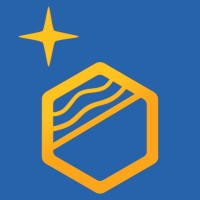

Optical Deblurring Technologies
Space ODT specialises in the following applications:
Heavens from Earth
Earth from Heavens
A Python package providing atmospheric tomography generic functions and tools for adaptive-optics systems.
pip install tomoAO
Object-Oriented Python Adaptive Optics — a Python-based tool for end-to-end AO simulations, currently under active development. Space ODT is collaborating on its development.